Chọn đúng AI, model và gói cho việc của bạn
Claude, ChatGPT, Gemini hay Grok. Gói 20 USD, 100 USD hay API. Model nhanh hay model mạnh. Và khi nào bạn mới cần Claude Code.
Claude, ChatGPT, Gemini hay Grok: AI nào hợp với việc của bạn?
Sau bài này, bạn đọc được một bảng xếp hạng AI và chọn một app chính, một app phụ cho đội.
Mỗi hãng mạnh ở một nhóm việc
Claude
UX và UI, code, knowledge work: tư duy sâu, hiểu việc như chuyên gia, điểm Elo top đầu. Điều khiển app và phần mềm trên máy tính tốt.
Gemini
Content sáng tạo, giọng văn tốt. Research online sâu ở mức ổn. Gói Google AI Ultra có nhiều ưu đãi, tạo được video, có NotebookLM.
Grok
Rẻ. Grok Bot chạy agent tốt. Fact check tốt, có nhiều nội dung chuyên sâu Google không có, nhờ học từ dữ liệu X.
ChatGPT
Tạo ảnh top đầu. Làm việc trên trình duyệt ổn. Dễ dùng, ai cũng dùng được. Tổng thể mình xếp top 3.
Mỗi hãng cũng có chỗ còn yếu
Viết content còn cứng
Diễn đạt khó hiểu, cứng, thiên học thuật.
Ít điểm nổi bật mới
Dạo này không nổi bật ở các mảng còn lại. Trợ giá thấp.
Đang rất ổn, code còn yếu hơn
Trợ giá thấp hơn Claude. Code còn yếu hơn, dù vẫn top 2.
Mỗi bảng xếp hạng đo một thứ khác nhau
Gộp 9 bài thi
Một điểm chung cho trí tuệ của model, gọi là Intelligence Index.
Người dùng bình chọn
Hai câu trả lời đặt cạnh nhau, người dùng chọn câu hay hơn.
Bộ bài thi riêng
Do một bên thứ ba tự soạn và tự chấm.
Theo Artificial Analysis ngày 20/11/2026: Claude đứng đầu
Ảnh chụp trang Artificial Analysis "LLM Leaderboard", ngày 20/11/2026. Khung số do The AI Growth vẽ thêm.
- Intelligence Index: điểm gộp từ 9 bài thi.
- Claude Fable 5.2: 65 điểm, đứng đầu bảng.
- GPT-6.2 Astra (OpenAI): 62 điểm.
- Gemini 4 Neon (Google): 61 điểm. Ra ngày 18/11/2026 và đã lên hạng 3.
Theo mình, Gemini đang đứng thứ hai
Gemini kém OpenAI 1 điểm
61 so với 62, kiểm ngày 20/11/2026.
Gemini đứng trên OpenAI
Bảng của bên thứ ba, cập nhật sau khi Gemini 4 Neon ra.
Anthropic dồn sức vào việc dài, coding và việc của doanh nghiệp
Ảnh chụp trang Anthropic "Newsroom", ngày 20/11/2026. Khung số do The AI Growth vẽ thêm.
- Lời hãng về Fable 5.2: "set a new bar in coding, finance, and the sciences", nghĩa là đặt mốc mới ở coding, tài chính và khoa học.
Claude dẫn ở việc nào, chưa chắc dẫn ở việc nào?
Việc dài, code, knowledge work
Làm báo cáo nhiều bước, đọc nhiều file, code, dựng UX và UI, điều khiển phần mềm trên máy tính.
Viết content, dữ liệu hãng khác
Theo mình, Claude viết content còn cứng. Việc dựa trên Gmail, Drive hay tin trên X: phần cuối bài nói rõ.
RSI là khi AI giúp làm ra phiên bản AI tốt hơn
Google chạm mốc này từ đầu tháng 9/2026
Dấu hiệu: ngày 11/09/2026, một tài khoản chuyên tiết lộ tin AI viết hoa ba chữ R, S, I trong lời chúc Google DeepMind. Google chưa công bố.
Nhà nghiên cứu và model cùng làm ra model kế tiếp
Lời đồng sáng lập Google, Business Insider đăng lại.
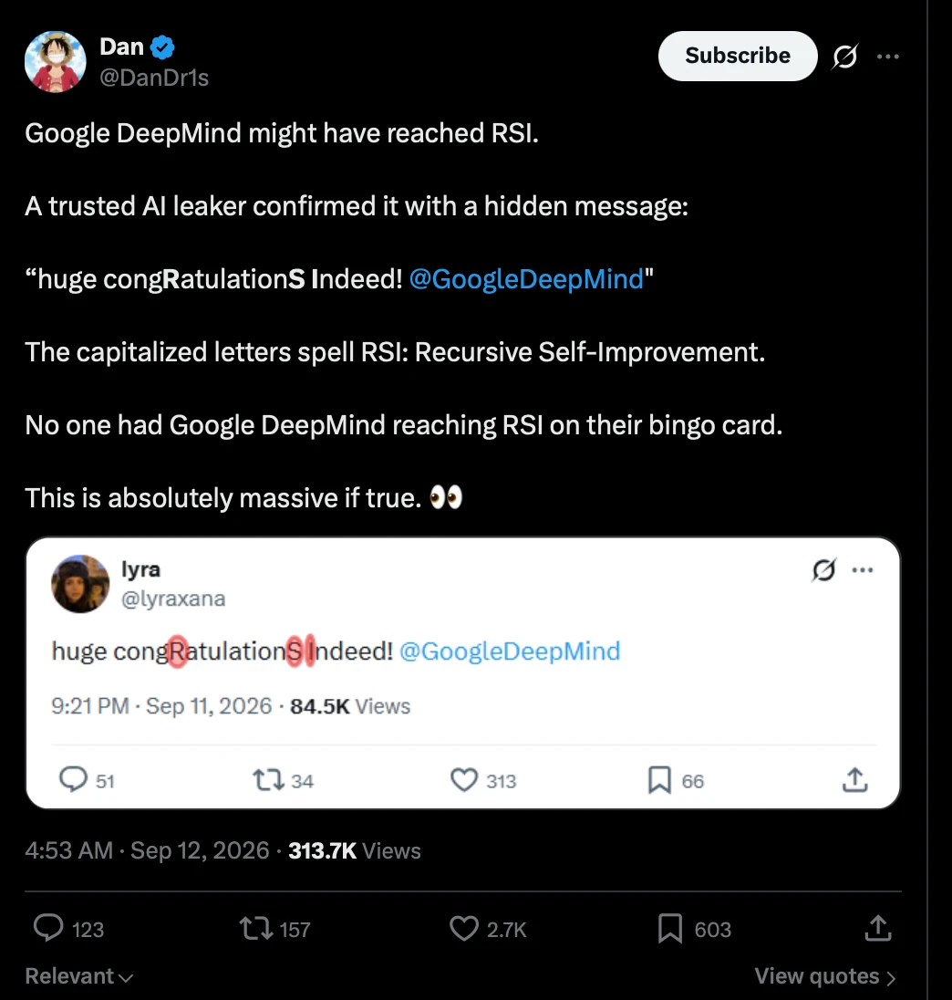
Ảnh chụp bài trên X của @DanDr1s ngày 12/09/2026, trích bài của @lyraxana ngày 11/09/2026. Bài ghi "if true": đây là tin đồn.
Model card của Google: chưa chạm ngưỡng tự động hoá nghiên cứu AI
- Mức 1, tăng tốc: AI giúp nghiên cứu AI nhanh hơn hẳn trước đây.
- Mức 1, tự động: AI làm trọn việc của một nhóm nghiên cứu.
- CCL not reached: Google ghi Argon chưa chạm cả hai ngưỡng.
Ảnh chụp model card "Gemini 4 Argon" của Google DeepMind, ngày 20/11/2026. Khung số do The AI Growth vẽ thêm.
4 model Gemini 4 ra trong 7 tuần.
Từ 30/09 đến 18/11/2026: Argon, Carbon, Hydrogen, Neon.
Dữ liệu và kênh riêng tạo ra thế mạnh riêng
| Hãng | Dữ liệu và kênh riêng | Thế mạnh (nhận định của mình) |
|---|---|---|
| Gemini app 1 tỷ người dùng, Search, Android, Chrome, Workspace, YouTube | Content sáng tạo, video, nhiều tính năng trong gói | |
| OpenAI | ChatGPT khoảng 1,2 tỷ người dùng mỗi tuần, hơn 20 thoả thuận với nhà xuất bản | Tạo ảnh, dễ dùng cho mọi người |
| Anthropic | Tập trung doanh nghiệp, coding, agent | Code, UX và UI, knowledge work |
| xAI | Dữ liệu X thời gian thực qua X Search | Rẻ, fact check, nội dung từ X |
Chọn app chính theo việc và dữ liệu của đội
Ảnh chụp trang Google "Q3 2026 earnings call: Remarks from our CEO", ngày 20/11/2026. Khung số do The AI Growth vẽ thêm.
- Gemini app đạt 1 tỷ người dùng, theo lời CEO Google trong bài kết quả quý 3/2026.
Nhờ Claude gợi ý app chính và app phụ
- 1Mỗi bảng xếp hạng đo một thứ. Luôn xem ngày.
- 2Ngày 20/11/2026 Claude đứng đầu Artificial Analysis. Theo mình Gemini đứng thứ hai.
- 3Chọn một app chính theo việc và dữ liệu của đội. Dùng bản Free app khác để đối chiếu.
Gói 20 USD, 100 USD hay API? Các hãng AI đang trợ giá bạn thế nào
Sau bài này, bạn biết mình trả tiền cho cái gì và lúc nào nâng gói là đáng.
Gói tháng giống thẻ buffet, API giống gọi món lẻ
Pro 20 USD cho cả tháng
Trả cố định, dùng trong app tới hạn mức.
Khoảng 1,20 USD cho một phiên chat dài
Phép tính minh hoạ với Opus 5.5, giá API kiểm 20/11/2026.
Hai cách trả tiền, hợp hai kiểu dùng
| Điểm so | Subscription (gói tháng) | API |
|---|---|---|
| Trả tiền | Cố định mỗi tháng | Theo số token dùng |
| Dùng ở đâu | Trong app, có sẵn Project, Skill, connector | Phần mềm, chatbot website, việc chạy hàng loạt |
| Giới hạn | Hạn mức mỗi 5 giờ và mỗi tuần | Không có trần chi phí nếu bạn không tự đặt |
Bốn gói cá nhân của Claude
- Free: 0 USD.
- Pro: 20 USD mỗi tháng, hoặc 17 USD nếu trả theo năm.
- Max: 100 USD mỗi tháng.
- Ultra: 200 USD mỗi tháng.
Ảnh chụp trang Anthropic "Pricing" (claude.com/pricing), ngày 20/11/2026. Khung số do The AI Growth vẽ thêm.
Gói Max, Ultra có kèm API credit hằng tháng
Ảnh chụp trang Anthropic "Pricing", cột gói Max, ngày 20/11/2026. Khung số do The AI Growth vẽ thêm.
- Max dùng gấp 5 lần Pro, tính theo mỗi 5 giờ và mỗi tuần.
- Kèm 100 USD API credit mỗi tháng. Gói Ultra kèm 200 USD.
Bạn làm việc trong app thì chưa cần API
Bạn làm việc trong app
Chat, viết, đọc file, giao việc nhiều bước trên Claude.
Phần mềm của bạn gọi AI
Chatbot trên website, phần mềm nội bộ, việc chạy hàng loạt.
Lượng bạn dùng trong gói, tính theo giá API, cao hơn số tiền bạn trả.
Hãng không dùng chữ "trợ giá". Người ngoài tự đo.
mypriors.com: giá trị API trên mỗi đô la trả cho gói
- Đơn vị đo: giá trị API bạn nhận trên mỗi đô la trả cho gói.
- Claude Ultra: trung vị 60 lần. Mở dòng ra thì Claude Pro là 82 lần.
- ChatGPT Pro: trung vị 30 lần. ChatGPT Plus là 15 lần.
Ảnh chụp mypriors.com "Plan subsidies", ngày 20/11/2026. Ước tính của tác giả công cụ, hãng không xác nhận. Khung số do The AI Growth vẽ thêm.
Ba nguồn đo, lệch nhau gần 2 lần
| Nguồn | Cách đo | Kết quả |
|---|---|---|
| mypriors.com | Cộng đồng tự đo, tính trung vị theo gói | Claude Pro 82 lần, ChatGPT Plus 15 lần |
| SemiAnalysis | Bài phân tích của bên thứ ba | Anthropic cho khoảng 5 lần giá trị so với OpenAI ở model tầm trung |
| AICodeKing | Bài trên X ngày 19/11/2026, ước tính theo tháng, không nêu gói | Chỉ ra chiều, không so được từng gói |
Hãng chịu lỗ ở gói tháng để giữ bạn lại
Giành người dùng
SemiAnalysis gọi gói tháng là "customer acquisition and marketing tools", nghĩa là công cụ để kéo khách.
Khó đổi hãng
Project, Skill, memory nằm trong tài khoản của bạn. Càng dùng lâu, càng khó chuyển đi.
Hãng có thể đổi luật bất kỳ lúc nào
Ảnh chụp trang hỗ trợ Anthropic "Use the Claude Agent SDK with your Claude plan", ngày 20/11/2026. Khung số do The AI Growth vẽ thêm.
- 15/06/2026: Anthropic hoãn thay đổi đã công bố về cách tính Agent SDK.
- 07/10/2026: gói Max, Ultra, Team có thêm API credit hằng tháng.
Chọn gói theo việc. Đừng xây cả quy trình dựa trên một mức hạn mức.
Đội dựa vào hạn mức rộng của một gói. Giữa tháng hãng siết lại, cả quy trình đứng.
Nâng gói khi cả 3 điều cùng đúng
Hết lượt giữa tuần
Nhiều lần trong một tháng, không phải một lần.
Việc AI làm đáng tiền
Giá trị tạo ra lớn hơn phần tiền bạn trả thêm.
Bạn đã dùng đúng cách
Chat ngắn, đúng model, đúng mức nỗ lực (Module 03).
Hai thanh cho bạn biết còn bao nhiêu lượt
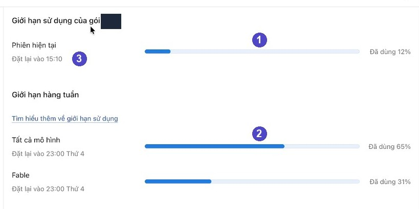
- Phiên hiện tại: thanh 5 giờ.
- Giới hạn hàng tuần: thanh của cả tuần.
- Đặt lại vào: giờ thanh 5 giờ trở về 0.
Đi từng bậc, không nhảy cóc
Hỏi Claude: mình có nên nâng gói không?
- 1Gói tháng trả cố định trong app. API trả theo token.
- 2Trợ giá là ước tính của người ngoài. Hãng đổi luật được bất kỳ lúc nào.
- 3Nâng gói khi cả 3 dấu hiệu cùng đúng.
Mỗi hãng có những model nào, dùng cho việc gì?
Sau bài này, bạn đọc được bộ chọn model của 4 app và biết mỗi model dùng cho việc gì.
Bạn đang để model nào? Nhìn cạnh nút gửi
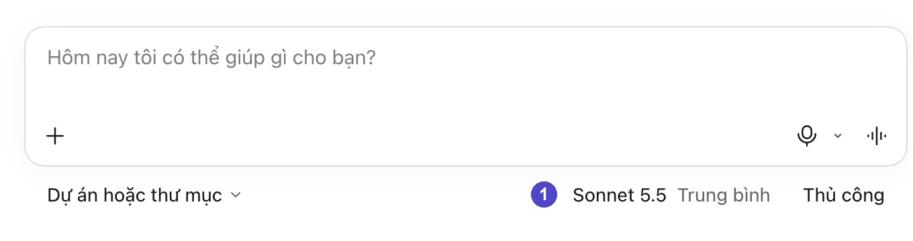
- Tên model và mức nỗ lực: ở đây là Sonnet 5.5, mức Trung bình. Bấm vào để đổi.
Giống một đội có nhân viên, chuyên viên và chuyên gia
Nhanh và nhẹ
Như nhân viên nhanh tay: làm việc lặp, số lượng lớn.
Cân bằng
Như chuyên viên: việc hằng ngày, đủ nhanh, đủ giỏi.
Mạnh nhất
Như chuyên gia: việc khó, cần nghĩ kỹ.
Vì sao không để model mạnh nhất cho mọi việc?
Dịch 100 dòng mô tả sản phẩm
Việc lặp, dễ kiểm. Model nhanh làm xong sớm, ít tốn lượt.
Lập kế hoạch quý
Việc khó, sai thì tốn kém. Đáng để model nghĩ lâu hơn.
Menu model: mỗi model một tầng
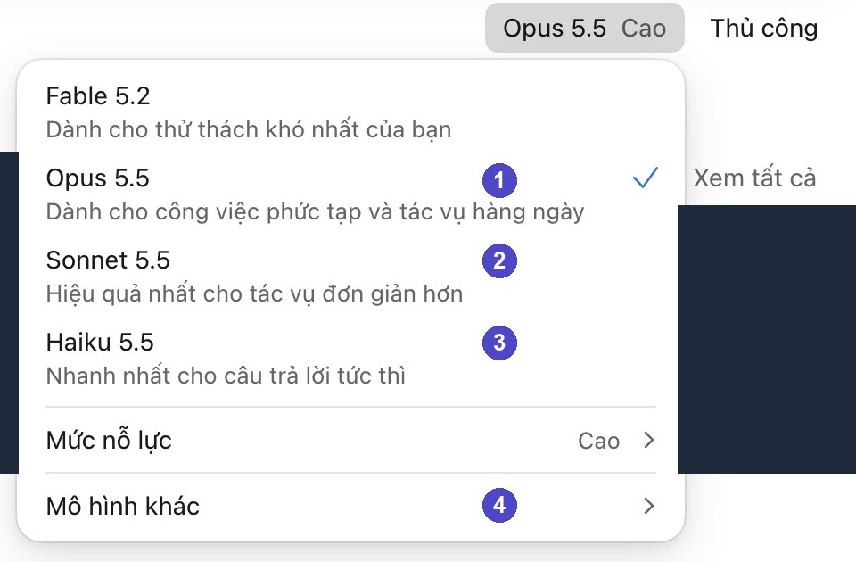
Ảnh chụp app Claude ngày 11/11/2026, gói cao hơn Pro. Gói Free không có Fable và Opus.
- Opus 5.5: "Dành cho công việc phức tạp và tác vụ hằng ngày".
- Sonnet 5.5: "Hiệu quả nhất cho tác vụ đơn giản hơn".
- Haiku 5.5: "Nhanh nhất cho câu trả lời tức thì".
- Mô hình khác: các model đời cũ.
Claude: Haiku, Sonnet, Opus, Fable
- Haiku 5.5: việc số lượng lớn, cần nhanh: phân loại, trích thông tin.
- Sonnet 5.5: cân bằng giữa tốc độ và trí tuệ.
- Opus 5.5: agent chạy dài, việc tri thức. Hãng khuyên bắt đầu ở đây.
- Fable 5.2: suy luận khó, agent chạy rất dài.
Ảnh chụp trang Anthropic "Models overview", ngày 20/11/2026. Khung số do The AI Growth vẽ thêm.
Gói Free dùng model nào là đủ?
| Gói | Model có trong gói | Ghi chú |
|---|---|---|
| Free | Sonnet, Haiku | Sonnet cho việc hằng ngày, Haiku cho câu hỏi nhanh |
| Pro | Thêm Opus | Fable trả bằng usage credits, ngoài hạn mức gói |
| Max, Ultra | Như Pro, thêm Fable | Fable dùng tới một nửa hạn mức tuần |
Gemini: Hydrogen, Neon, Carbon
| Model | Dùng cho | Gói có |
|---|---|---|
| Gemini 4 Hydrogen | Nhanh, cho việc hằng ngày | Mọi người dùng |
| Gemini 4 Neon | Nằm giữa Hydrogen và Carbon, ra 18/11/2026 | AI Pro, AI Ultra |
| Gemini 4 Carbon | Suy luận mạnh nhất | AI Ultra |
ChatGPT: chọn model và mức suy nghĩ ngay dưới ô nhập
Ảnh chụp trang OpenAI "Models" (ChatGPT Work và Codex), ngày 20/11/2026. Khung số do The AI Growth vẽ thêm.
- Thanh chọn: tên model và mức suy nghĩ, ở đây là 6.2 Sol, mức Light.
- Mức suy nghĩ cao hơn: làm việc khó tốt hơn, nhưng lâu hơn và tốn token hơn.
ChatGPT: Astra, Sol, Terra, Luna
Ảnh chụp trang OpenAI "Models", mục Recommended models, ngày 20/11/2026. Khung số do The AI Growth vẽ thêm.
- Astra: dự án khó.
- Sol: việc hằng ngày. Hãng khuyên bắt đầu ở Sol.
- Terra: nhanh, viết rõ, hiểu hình. Luna: việc lặp số lượng lớn, có ở gói Free.
Grok hợp việc gì nhất?
Grok 4.7
Ra ngày 21/09/2026. Trên Artificial Analysis được 35 điểm.
Rẻ, fact check tốt, có dữ liệu X
Grok học từ dữ liệu X, nên có nhiều nội dung chuyên sâu Google không có. Grok Bot chạy agent tốt.
Chạy một việc trên 2 model, rồi nhờ Claude so
- 1Mỗi hãng chia model thành 3 tầng: nhanh, cân bằng, mạnh nhất.
- 2Tầng cao kỹ hơn, nhưng chậm hơn và tốn lượt hơn.
- 3Tên model đổi theo tháng. Luôn xem ngày.
Model nào hợp với bạn? Ví dụ chia model ở một agency và rule of thumb
Sau bài này, bạn điền được bảng chọn app, model và gói cho đội mình.
Cùng hỏi "dùng AI nào", ba người chọn khác nhau
Chủ shop online
Làm một mình, ngân sách nhỏ, việc chính là viết và trả lời khách.
Trưởng phòng marketing 5 người
Cả đội cần dùng chung tài liệu và cách làm.
CEO công ty dịch vụ 30 người
Nhiều phòng ban, có việc cần agent chạy dài.
Trả lời 4 câu, ra app, model và gói
Dữ liệu của đội nằm ở đâu?
Gmail, Drive, Microsoft 365, hay file trên máy.
Việc chính là gì?
Viết, làm báo cáo, trả lời khách, coding.
Ngân sách mỗi người bao nhiêu?
0 USD, 20 USD, hay hơn.
Có việc cần agent chạy dài không?
Việc trên nhiều file, chạy cả buổi.
Đội dùng Google Workspace, việc chính là viết, 20 USD mỗi người
| Câu hỏi | Đội trả lời | Ra gì |
|---|---|---|
| 1 · Dữ liệu | Gmail và Google Drive | Thử Gemini làm app phụ, hoặc nối Drive vào app chính |
| 2 · Việc chính | Viết bài, viết email | Model cân bằng làm mặc định |
| 3 · Ngân sách | 20 USD mỗi người | Gói 20 USD |
| 4 · Chạy dài | Chưa có việc nào | Chưa cần Claude Code |
Ở agency SEO của mình, mỗi loại việc một model
Việc lặp không cần model đắt
Soát hàng loạt theo tiêu chí dùng model nhanh.
Việc gấp cần trả lời nhanh
Model nhanh trả lời trong vài giây.
Việc cần đúng dùng model mạnh
Theo mình, Opus 4.6 viết bài dài tiếng Việt tốt nhất (ghi ngày 24/10/2026).
Bảng chia model theo loại việc
| Loại việc | Model và mức nỗ lực | Vì sao |
|---|---|---|
| Tìm hiểu, nghiên cứu | Opus 5.5, Cao | Cần nghĩ rộng, đọc nhiều nguồn |
| Lập dàn ý | Opus 5.5 hoặc Gemini Neon, Hydrogen | Người duyệt dàn ý trước khi viết |
| Viết nháp, chuyển kênh, kiểm số | Gemini Hydrogen | Việc nhiều, cần nhanh |
| Đăng tải và tối ưu | Opus 5.5 hoặc Gemini Hydrogen | Sửa tiêu đề, mô tả theo kênh |
| Viết bài dài tiếng Việt | Opus 4.6 | Theo mình viết tiếng Việt dài tốt nhất |
| Đọc tài liệu, trích ý | Sonnet 5.5, Cao | Chỉ đọc, không cần model mạnh nhất |
| Soát hàng loạt theo tiêu chí | Model nhanh | Việc lặp, số lượng lớn |
Năm luật chọn model
- 1Mặc định dùng model cân bằng.
- 2Việc khó, cần đúng: dùng model mạnh.
- 3Việc lặp, đơn giản, số lượng lớn: dùng model nhanh.
- 4Kết quả chưa đạt: tăng mức nỗ lực trước, đổi model sau.
- 5Thử 2 model trên việc thật trước khi chốt. Xem lại mỗi tháng.
Chưa đạt thì tăng mức nỗ lực trước, đổi model sau
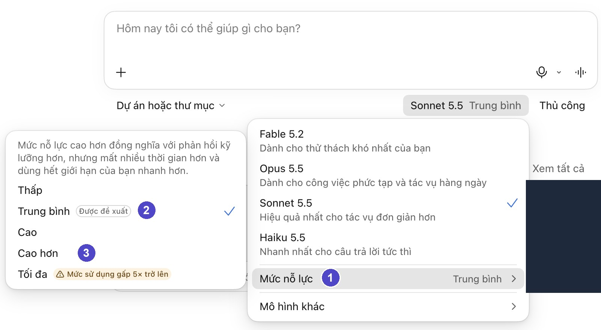
Ảnh chụp app Claude ngày 11/11/2026, gói cao hơn Pro. Gói Pro có thể khác một chút.
- Mức nỗ lực: nằm ngay trong menu model.
- Trung bình: mức app ghi "Được đề xuất".
- Cao hơn: thử mức này trước khi đổi sang model khác.
Thử cùng một việc trên 2 model trước khi chốt
Lần chạy 1: email trả lời khách trên Sonnet 5.5.
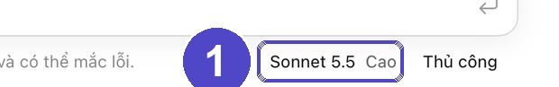
Lần chạy 2: cùng prompt trên Opus 5.5.
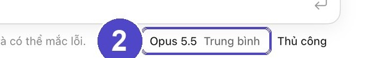
- Sonnet 5.5, mức Cao.
- Opus 5.5, mức Trung bình.
Đổi khi thử trên việc thật thấy khác rõ
Bạn thử 2 model trên việc thật, model mới tốt hơn rõ ở cùng mức lượt dùng.
Hãng ra model mới. Mỗi tháng mở menu model một lần.

Menu model của Claude, ảnh chụp app ngày 11/11/2026.
Nhờ Claude dựng bảng chọn cho đội bạn
- 1Chọn theo dữ liệu, việc chính, ngân sách và nhu cầu chạy dài.
- 2Mặc định model cân bằng. Việc khó dùng model mạnh. Việc lặp dùng model nhanh.
- 3Tăng mức nỗ lực trước, đổi model sau.
Claude Code, Antigravity, Grok Bot là gì, và khi nào bạn mới thật sự cần?
Sau bài này, bạn biết đội mình đã cần một công cụ agent harness hay chưa.
Cùng một model, khác phần khung bọc quanh
Chat, giao việc trong app và Claude Code dùng chung bộ não. Khác nhau ở chỗ Claude được làm gì, và làm ở đâu.
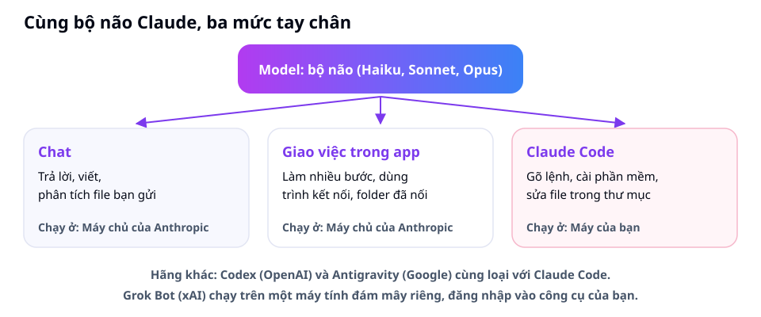
Harness là phần khung bọc quanh model
Công cụ
Mở file, chạy lệnh, mở trình duyệt.
Quyền
Được làm gì, phải hỏi bạn trước việc gì.
Bộ nhớ
Nhớ những gì đã làm, đọc lại tài liệu.
Luật làm việc
Quy định phải theo, như nội quy công ty.
Cùng model Opus 5.5, hai cách làm khác nhau
Bạn tải file lên
Claude đọc những file bạn gửi trong khung chat, rồi viết báo cáo.
Claude mở thẳng thư mục
Claude tự đọc đủ 50 file trên máy, chạy lâu, lưu báo cáo vào thư mục.
Chế độ quyền: bạn giữ nút gửi trong tay
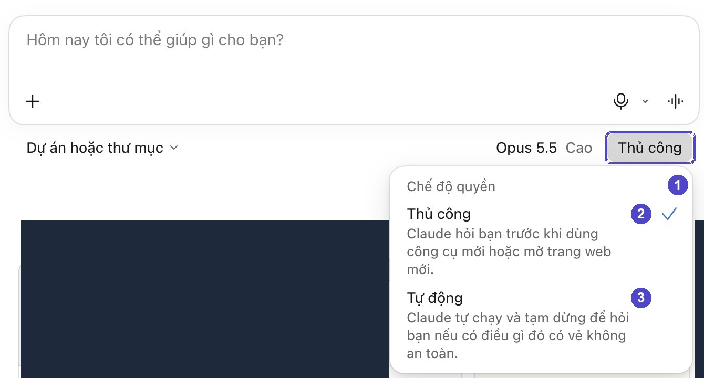
Ảnh chụp app Claude ngày 11/11/2026, gói cao hơn Pro. Gói Pro có thể khác một chút.
- Chế độ quyền: nút cạnh tên model.
- Thủ công: Claude hỏi bạn trước khi dùng công cụ mới hoặc mở trang web mới.
- Tự động: Claude tự chạy, tạm dừng hỏi khi có gì có vẻ không an toàn.
Chat, Claude Code và app trên máy dùng chung một quỹ lượt
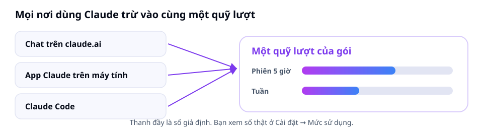
Trang Mức sử dụng không có thanh riêng cho Claude Code. Phần tô màu là số giả định.
Claude Code: agent làm trên thư mục
Claude Code làm việc trên thư mục máy bạn hoặc máy đám mây, chạy được việc dài.
Gói có: Pro, Max, Ultra, Team, Enterprise. Gói Free không có.
Codex là công cụ tương tự của OpenAI, có từ gói ChatGPT Plus.
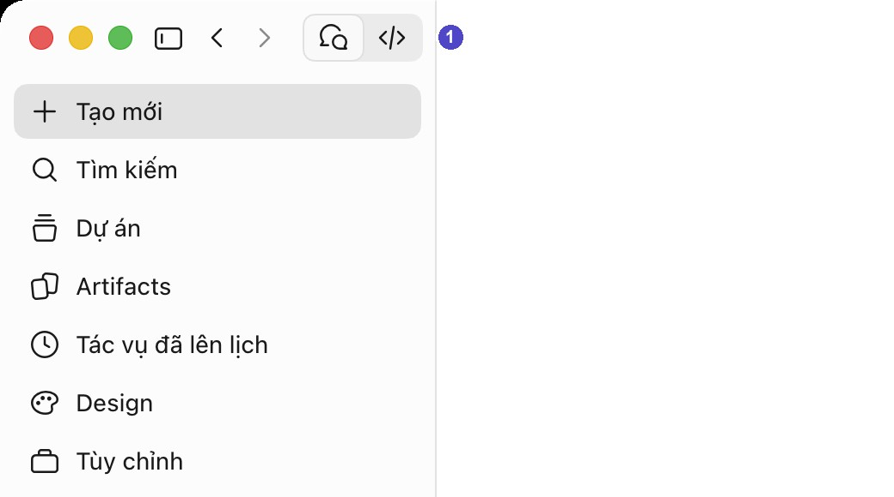
App Claude trên máy tính: nút Code ở đầu thanh bên (1). Ảnh chụp ngày 11/11/2026.
Chat giao việc trong app, Claude Code làm trên cả thư mục
Giao việc nhiều bước
Đọc file bạn gửi, dùng connector, tạo file báo cáo, bảng tính, slide.
Làm trên cả thư mục
Đọc và sửa hàng trăm file, viết script, chạy lâu.
Grok Bot: bot có máy tính đám mây riêng
Ảnh chụp trang xAI "Meet Grok Bot", ngày 20/11/2026. Khung số do The AI Growth vẽ thêm.
- Lời hãng: bot nhận việc như một đồng nghiệp, tự đăng nhập công cụ và mang kết quả về.
- Mỗi bot một vai: chạy nền và chạy theo lịch.
Người dùng ở Việt Nam thử được công cụ nào ngay?
Antigravity
Nền tảng agent có app trên máy, agent chạy song song, việc theo lịch. Gói cá nhân 0 USD có hạn mức cơ bản.
Grok Bot
Bot có máy tính đám mây riêng, chạy nền và theo lịch. Từ gói Premium 30 USD.
Dấu hiệu đã cần và dấu hiệu chưa cần
Việc trên nhiều file, chạy lâu
Việc trên nhiều file trong thư mục, viết script, dựng web, chạy lâu.
Việc làm được trong chat
Việc làm được trong Claude chat đã gộp Cowork.
Đi từ chat, qua giao việc, tới Claude Code khi việc cần
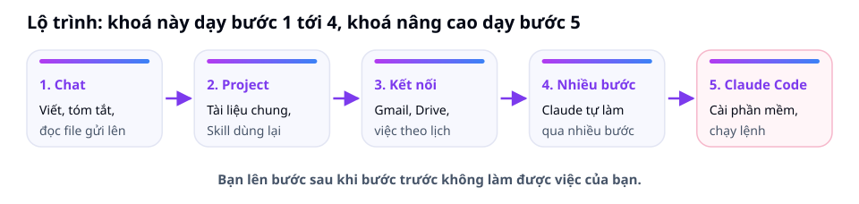
- 1Harness là phần khung bọc quanh model: công cụ, quyền, bộ nhớ, luật.
- 2Claude Code, Codex, Antigravity, Grok Bot cho agent làm trên thư mục và chạy lâu.
- 3Người mới dùng chắc Claude chat trước.
Tính năng nổi bật: connector, plugin, việc theo lịch và bot cá nhân
Sau bài này, bạn phân biệt được connector, plugin, Skill và biết AI làm việc khi bạn không ngồi chat bằng cách nào.
Một việc, ba tên gọi
Bạn học khái niệm một lần, rồi tra tên theo công cụ của người đang dùng.
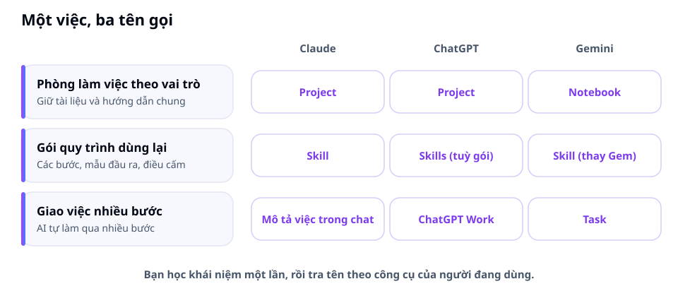
Connector: nối Claude với app bạn dùng
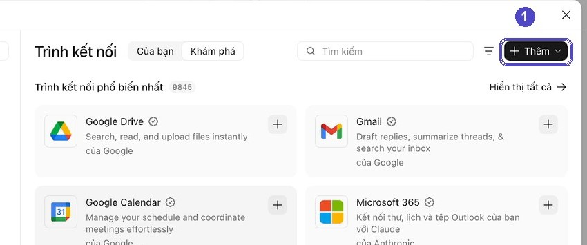
Khung hình từ video ngày 08/11/2026, gói cao hơn Pro, tên gói đã che.
- Nút Thêm: thêm connector mới.
Connector tốn token, chỉ bật cái cần
Nối Google Drive, rồi hỏi
"Tóm tắt 3 file báo cáo tuần trước."
Chặn công cụ gửi khi chưa cần
Ví dụ quyền gửi email trong Gmail. Module 04 nói kỹ.
Ba thứ, ba việc khác nhau
| Thứ | Là gì | Gói có |
|---|---|---|
| Connector | Một kết nối tới một dịch vụ | Mọi gói, kể cả Free |
| Skill | Hướng dẫn dùng lại cho một việc, cần bật chạy code | Từ Free tới Enterprise |
| Plugin | Gói gồm Skill, connector, sub-agent cho một vai trò | Gói trả phí |
Skill, connector, plugin ngay trong ô nhập
Gồm Skill viết bài, connector Drive và một sub-agent soát chữ.
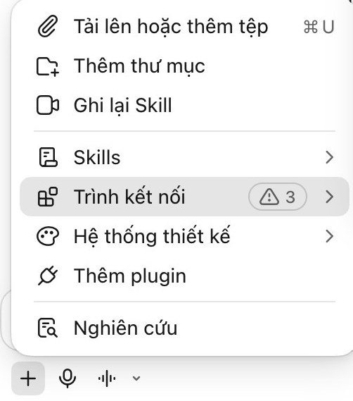
Menu nút dấu cộng ở ô nhập Claude, ảnh chụp ngày 11/11/2026, app tiếng Việt.
Mô tả việc một lần, Claude tự chạy theo lịch
Chọn tần suất, bấm "Schedule". Xem lại ở mục Tác vụ đã lên lịch trên thanh bên.
Việc chạy trên cloud, máy tắt vẫn chạy. Có ở mọi gói trả phí, gói Free không có.
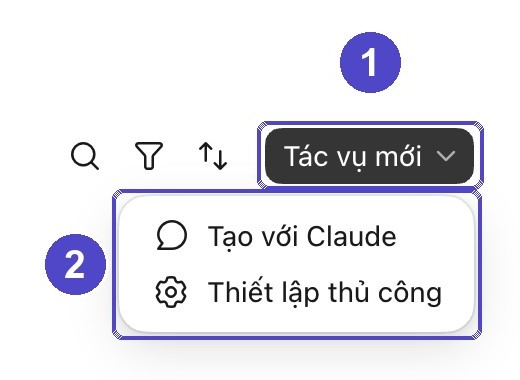
Trang Tác vụ đã lên lịch: nút Tác vụ mới (1) và menu của nút (2). Ảnh chụp ngày 11/11/2026.
Việc lặp đúng giờ hợp chạy theo lịch
Bản tin sáng
Gom tin ngành của hôm qua thành một trang.
Báo cáo tuần
Gom số liệu tuần trước, viết bản tóm tắt.
Mỗi hãng đang làm một "đồng nghiệp AI" chạy 24/7
| Bot | Làm gì | Ai dùng được |
|---|---|---|
| ChatGPT Dots | Máy tính và trình duyệt riêng, nối hơn 4.000 app | Pro, Plus chọn lọc, Business Premium, Business Standard (Mỹ), Enterprise, Edu, Healthcare |
| Grok Bot | Máy tính đám mây riêng, chạy nền và theo lịch | Từ gói Premium 30 USD |
| Claude Duet | Hỏi bạn trước khi gửi, thanh toán, ký, xoá | Pro, Max, Ultra ở Mỹ, có danh sách chờ |
| Gemini Tasks | Tới 15 việc chạy nền | AI Pro hoặc Ultra, theo quốc gia |
Claude Duet: chờ bạn đồng ý ở bước quan trọng
Ảnh chụp trang Anthropic "Claude Duet", ngày 20/11/2026. Khung số do The AI Growth vẽ thêm.
- Research preview: bản thử nghiệm, chưa mở rộng.
- Lời hãng: làm việc cả khi bạn vắng mặt, và chờ bạn đồng ý khi việc quan trọng.
- Pro, Max, Ultra ở Mỹ. Người dùng nơi khác vào danh sách chờ.
Bot 24/7 phần lớn chưa mở ở Việt Nam.
- 1Connector nối app. Skill dạy cách làm. Plugin gói cả hai cho một vai trò.
- 2Việc theo lịch chạy được ngay ở gói trả phí.
- 3Bot cá nhân 24/7 phần lớn chưa mở ở Việt Nam.
Tiếp theo: Module 03
Giao việc cho AI: công thức 5 thành phần, ví dụ mẫu, context và mức nỗ lực.